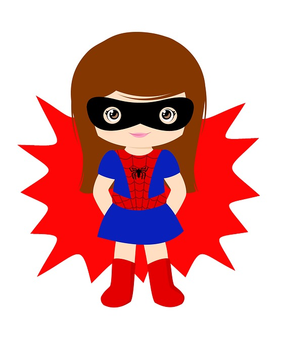
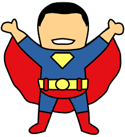
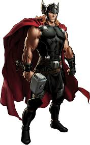

Superhero
Superhero wikipedia page

A Superhero (sometimes rendered super-hero or super hero) is a type of heroic stock character who possesses
supernatural or superhuman powers and who is dedicated to fighting crime, protecting the public, and usually battling
supervillains. A female Superhero is sometimes called a Superheroine (also rendered
super-heroine or super heroine), although the word Superhero is commonly used for females also.
Superhero fiction is the genre of fiction that is centered on such characters, especially in American
comic books since the 1930s.
By most definitions, characters do not require actual superhuman powers or phenomena to be deemed Superheroes.[1][2][3]
While the Dictionary.com definition of "Superhero" is "a figure, especially in a comic strip or
cartoon, endowed with superhuman powers and usually portrayed as fighting evil or crime",[4] the longstanding Merriam-Webster
dictionary gives the definition as "a fictional hero having extraordinary or superhuman powers; also: an exceptionally
skillful or successful person".[5] Terms such as masked crime fighters, costumed adventurers or masked vigilantes
are sometimes used to refer to characters such as the Spirit, who may not be explicitly referred to as Superheroes
but nevertheless share similar traits.
Superheroes use their powers to counter daily crime while also combating threats against humanity from
supervillains, who are their criminal counterparts. Often at least one of these supervillains will be the
Superhero's archenemy. Some long-running Superheroes such as Batman, Spider-Man,
Superman, Captain America, Wonder Woman, Iron Man, the Flash, Wolverine, Green Lantern, and Hulk have a rogues gallery
of many villains.
Contents
- Early history
- 1940s
- 1950s
- 1960s
- 1970s
- Common Traits
Early History
The word 'Superhero' dates to at least 1917.[6] Antecedents of the archetype include such folkloric
heroes as Robin Hood, who adventured in distinctive clothing.[7] The 1903 play The Scarlet Pimpernel and its spinoffs
popularized the idea of a masked avenger and the Superhero trope of a secret identity.[7] Shortly afterward,
masked and costumed pulp fiction characters such as Zorro (1919), The Shadow (1930) and comic strip heroes, such as the
Phantom (1936) began appearing, as did non-costumed characters with super strength, including Patoruzú (1928), the comic-strip
character Popeye (1929) and novelist Philip Wylie's protagonist Hugo Danner (1930).[8]
In the 1930s, both trends came together in some of the earliest superpowered costumed heroes such as Japan's Ōgon Bat[9][10]
(visualized in painted panels used by kamishibai oral storytellers in Japan since 1931), Mandrake the Magician[11][12][13]
(1934), Superman in 1938 and Captain Marvel (1939) at the beginning of the Golden Age of Comic Books.
Common Traits


| Name |
Power |
age |
| superman |
superstrength |
unknown |
| thor |
hammer |
immortal |
Many Superhero characters display the following traits:
- Extraordinary powers or abilities. Superhero powers vary widely; superhuman strength, the ability
to fly, enhanced senses, and the projection of energy bolts are all common. Some characters like Batman, Mockingbird,
the Phantom and the Question possess no superhuman powers but have mastered skills such as martial arts, espionage
techniques, and applied or forensic sciences to a highly remarkable degree. Others rely on fantastical weapons
or technology, such as Iron Man's powered armor suits, Green Lantern’s power ring, and trick arrows employed
by Green Arrow and Hawkeye. Many characters supplement their innate superhuman powers with a special weapon or
device (e.g. Captain America's shield, Wonder Woman's lasso and bracelets, Thor's weather manipulating hammer,
and Wolverine's adamantium claws)
- A strong moral code, including a willingness to risk one's own safety in the service of good without expectation
of reward. Such a code often includes a refusal or strong reluctance to kill or wield lethal weapons
- A motivation, such as a sense of responsibility and guilt (e.g. Spider-Man), an altruistic calling (e.g. Wonder Woman),
a childhood trauma or personal vendetta against criminals (e.g. Batman), or a strong belief in justice and humanitarian
service (e.g. Superman).
- A secret identity that protects the Superhero's friends and family from becoming targets of his
or her enemies, such as Clark Kent (Superman), or to protect themselves from getting arrested by the police,
like Spider-Man, although many Superheroes have a confidant (usually a friend or relative who
has been sworn to secrecy). Most Superheroes use a descriptive or metaphoric code name for their
public deeds. However, there are also rare ones whose true identities are common public knowledge, even with
a costumed identity (e.g. Iron Man and Captain America).
Common Costume Features
Many features of Superhero costumes recur frequently, including the following:
- Superheroes who maintain a secret identity often wear a mask, ranging from the domino of Robin and
the Green Hornet to the full-face masks of Spider-Man and Black Panther. Most common are masks covering the upper
face, leaving the mouth and jaw exposed. This allows for both a believable disguise and recognizable facial expressions.
A notable exception is Superman, who wears nothing on his face while fighting crime, but uses large glasses in
his civilian life as Clark Kent. Some characters wear helmets, such as Doctor Fate or Magneto
- A symbol, such as a stylized letter or visual icon, usually on the chest.
I am Superhero.
I believe I can fly, [1]
I believe I can touch the sky